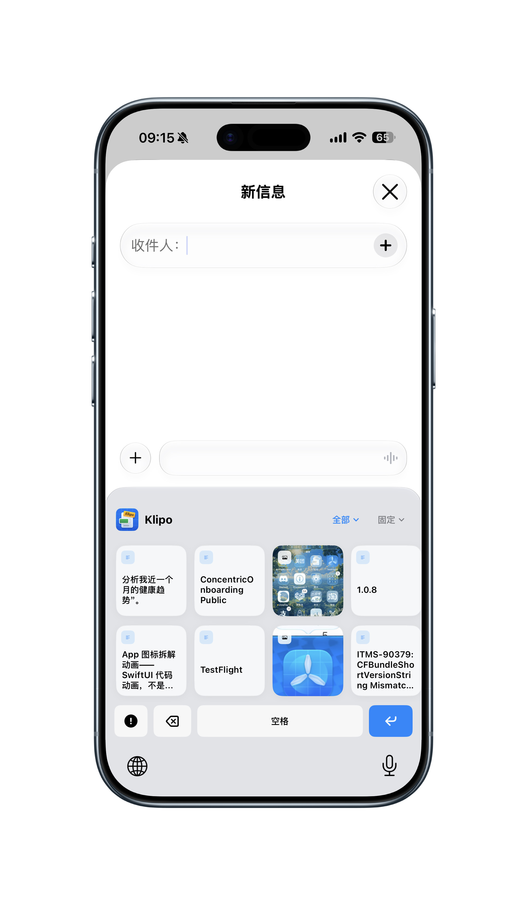
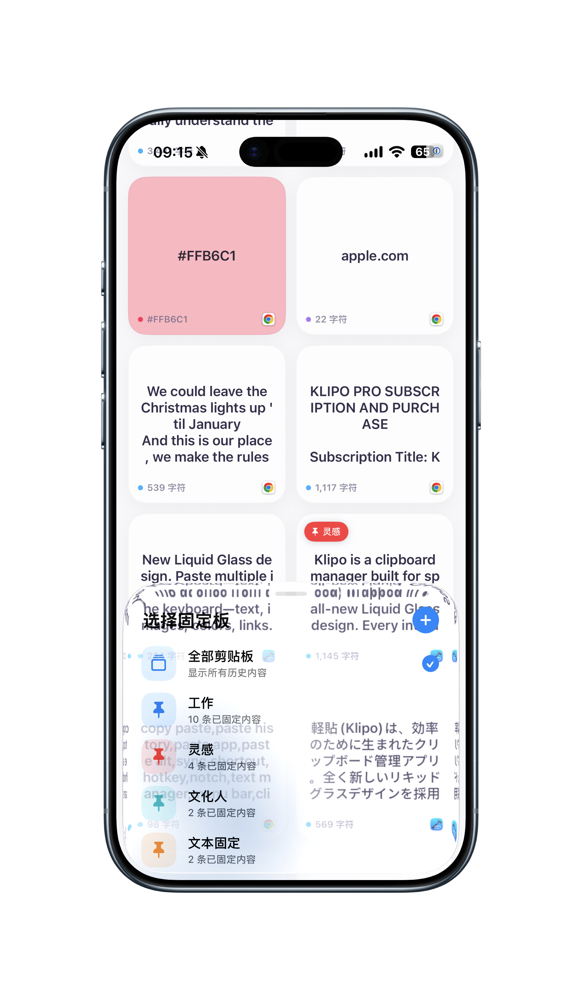

轻贴把文字、链接、颜色与图片整理成清晰的历史记录，通过键盘和分享扩展，在需要的时候快速找回。Klipo keeps text, links, colors, and images in a clear history, then brings them back through its keyboard and share extensions.
不是另一份列表。 是内容重新流动的方式。More than a list. A way to keep content moving.
从保存、整理到再次使用，每一步都围绕真实的跨设备工作场景设计。Save, organize, and reuse content across your Apple devices without breaking focus.
⌨
在正在输入的地方，找回最近内容。Bring recent content into the field you are using.
切换到 Klipo 键盘即可插入文字、链接和颜色；图片可复制到系统剪贴板，并在兼容的 App 中拖放使用。Switch to the Klipo keyboard to insert text, links, and colors. Copy images to the system clipboard or drag them into compatible apps.


↗
分享即保存Save from Share
在系统分享菜单中选择“保存到 Klipo”，文字、链接或图片会进入轻贴，稍后再整理和使用。Choose “Save to Klipo” from the system share sheet to keep text, links, or images for later.
▤
iPad 多栏工作台An iPad workspace
侧边栏、内容区与详情区会根据窗口宽度自动调整，在全屏、分屏和台前调度中保持清晰。Sidebar, history, and detail views adapt to the available width across full screen, Split View, and Stage Manager.
☁
从 Mac 复制，在移动设备继续。Copy on Mac. Continue on your mobile devices.
开启 iCloud 同步后，轻贴通过 Apple CloudKit 在你的设备之间同步支持的剪贴内容、固定状态与固定板。轻贴不运营额外的剪贴板服务器。When iCloud sync is enabled, Klipo uses Apple CloudKit to sync supported clipboard items, pinned states, and pinboards. Klipo does not operate a separate clipboard server.
1. 保存1. Save复制内容或使用分享扩展Copy content or use the share extension
2. 整理2. Organize搜索、固定或放入固定板Search, pin, or move into a pinboard
3. 使用3. Reuse从 App、键盘或 Mac 面板取回Retrieve it from the app, keyboard, or Mac panel
⌕
按内容方式搜索Search by meaning and type
通过文字搜索和内容类型筛选快速缩小范围；详情页支持中文分词选择，让长文本重新变得可用。Narrow results with text and content-type filters. Chinese word segmentation makes long text easier to reuse.
●
固定重要内容Pin what matters
为工作、灵感或常用回复建立不同固定板，让重要片段不再被新的复制记录淹没。Create pinboards for work, ideas, or frequent replies so important snippets do not disappear under new copies.
隐私优先Privacy first
你的剪贴内容，留在你的设备与 iCloud。Your clipboard stays on your devices and in your iCloud.
没有广告 SDK，也不出售剪贴内容。是否启用 iCloud 同步由你决定。No ad SDKs and no sale of clipboard content. You decide whether iCloud sync is enabled.
✓ 不运营独立剪贴板服务器✓ No separate clipboard server
✓ iCloud 同步可以随时关闭✓ iCloud sync can be disabled
✓ 系统扩展按需读取内容✓ Extensions access content only when needed
需要帮助？我们把步骤写清楚了。Need help? The steps are ready.
查看键盘、分享扩展、iCloud 同步和 Mac 自动粘贴的设置方法。Find setup and troubleshooting for the keyboard, share extension, iCloud sync, and automatic paste on Mac.